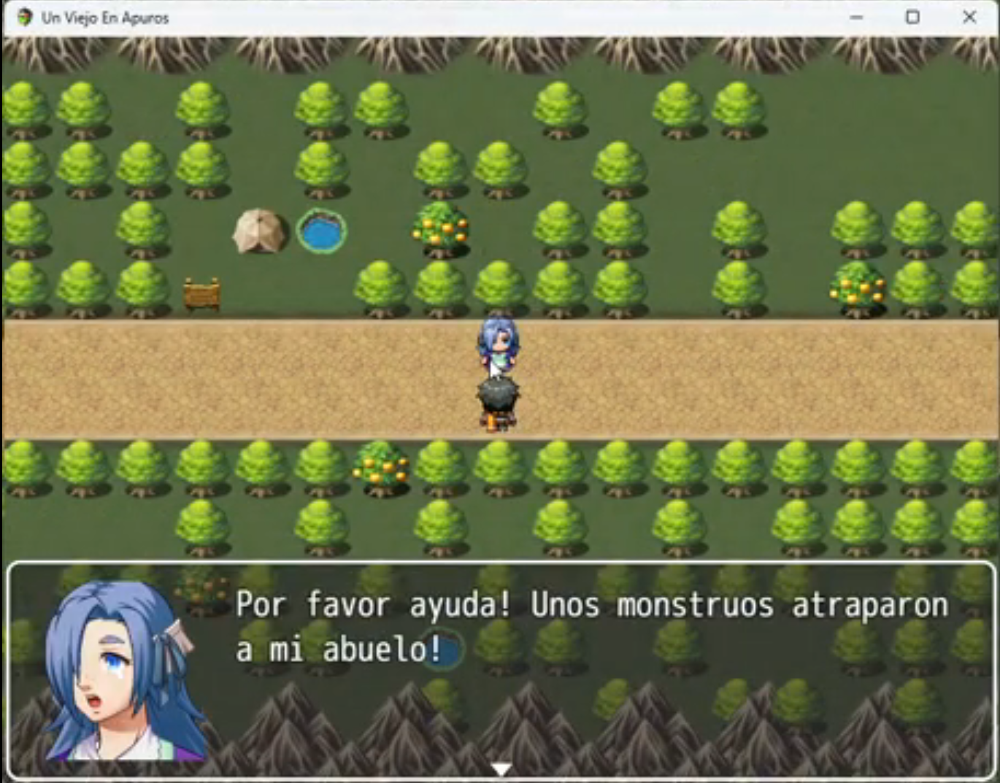
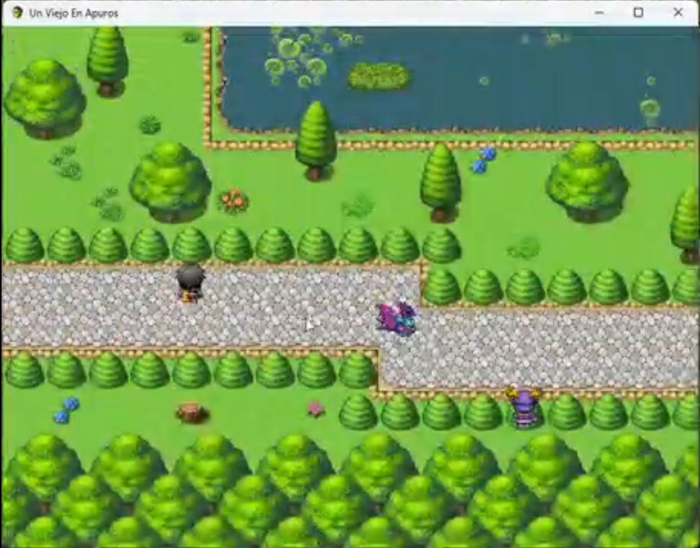

Aventura - RPG
UnSeñorEnApuros
⚔️
⚔️

⚔️

⚔️
Descripción
Mundo abierto donde sobrevivís explorando biomas, fabricando tu equipo y salvando personas.
Mecánicas
Sistema de ataques, Cambio de escenas, Sistema de inventario
Tecnologías
- RPG-Maker
Duración2 semanas
PlataformaPC
EstadoFinalizado
Archivos del proyecto
UnSeñorEnApurosGoogle Drive
Los archivos de este proyecto están en Google Drive. Podés verlos y descargarlos desde ahí.
Ver archivos en Google Drive